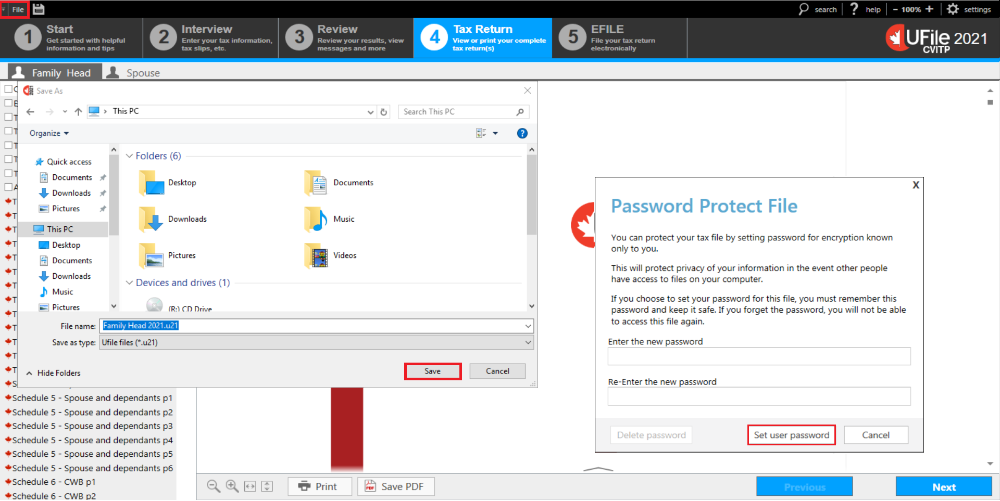
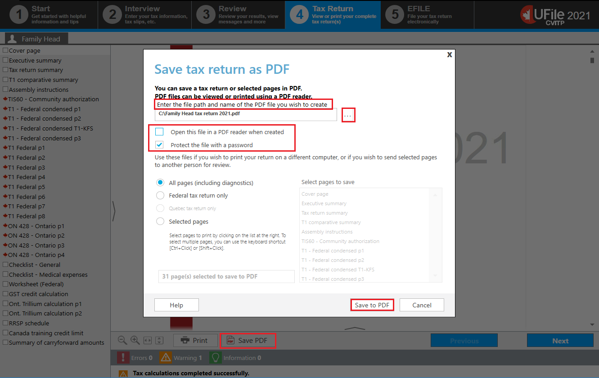
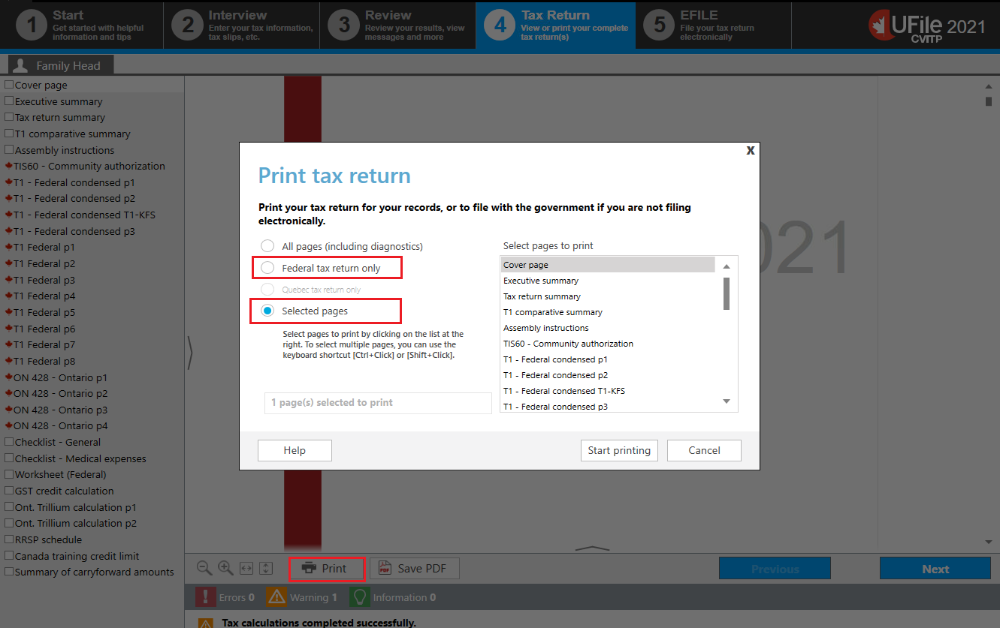
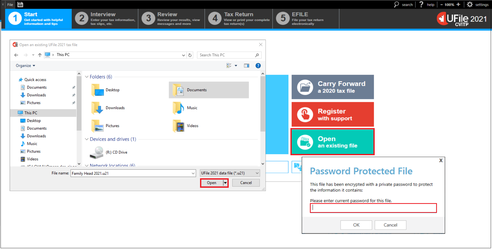

Saving and printing tax returns
On this page
Saving a tax return
Text version of this screenshot
UFile screen
Tax Return tab
File button is highlighted
A personal computer screen is displayed on the left
Save button is highlighted
Under Password Protected File pop-up window
Set user password button is highlighted
UFile CVITP software has enforced password protection to encrypt information when saved. When you use Save as to save a file, a pop-up window will appear. Select the location where the file will be saved (should always be on a USB flash drive, never on a hard drive). If the default location is not correct, click the file-folder icon, select the correct location that you will save the tax return to, and click Save.
Once you have encrypted and saved the tax return, a Password Protect File pop-up window will open. It is recommended that you use the same password for all of the tax returns you complete. Once you have entered a password, click Set user password.
Important note
You do not have to save the tax return in order to print it, or to transmit it using EFILE. This step is only necessary in instances where you are unable to transmit a tax return immediately upon completion. For more information, refer to the important note under Transmitting the return.
Printing a tax return
The CRA encourages electronic filing; however, it also recognizes that you may need to provide specific pages or a copy of the tax return to an individual. You can either save them as a PDF or print them for the individual.
Text version of this screenshot
UFile screen
Under Tax Return tab
Save PDF button is highlighted
Save tax return as PDF pop-up window is displayed
Enter the file path and name of the PDF file you wish to create is highlighted
Ellipsis (…) button is highlighted
Open this file in a PDF reader when created is unchecked and highlighted
Protect the file with a password is checked and highlighted
Save to PDF button is highlighted
To save specific pages or a copy of the tax return as a PDF:
- click Save PDF button at the bottom of the Tax Return page
- a pop-up window, Save tax return as PDF, will appear
- Enter the file path and the name of the PDF file you wish to create
- untick the box Open this file in a PDF reader when created
- tick the box Protect the file with a password
- tick either, All pages (including diagnostics), Federal tax return only, or Selected pages, depending on what you need to provide to the individual
- click Save to PDF
The pop-up window, Enter password for PDF, will appear.

Text version of this screenshot
Enter password for PDF pop-up window is displayed
Enter the password you and the individual decided on in both fields and click OK.
Text version of this screenshot
UFile screen
Under Tax Return tab
Family Head sub-tab
Cover page topic
Print button is highlighted
Print tax return pop-up window is displayed
Federal tax return only option is highlighted
Selected pages option is checked and highlighted
To print the tax return:
- click the Print button at the bottom of the Tax Return page
- a pop-up window, Print tax return, will appear
- tick either, All pages (including diagnostics), Federal tax return only or Selected pages, depending on what you need to print for the individual
When All pages or Federal tax return only are ticked, no further action is required. Simply click on Start printing.
When Selected pages is ticked, you can select individual forms, schedules and other pages, by holding down the Ctrl or Shift key on your keyboard and using your mouse to click on the pages you wish to print. Once you have selected all of the pages you require, click on Start printing.
Note
To minimize the number of pages you are printing, you can choose Federal tax return only or Selected pages rather than All pages.
If you are printing the tax return to send to the CRA for processing, choose Federal tax return only which will include only the main pages of the tax return.
Opening a saved tax return
Text version of this screenshot
UFile screen
Start tab
Open an existing file is highlighted
A personal computer screen is displayed on the left
Open button is highlighted
Under Password Protected File pop-up window
Please enter current password for this file is highlighted
To open a file that you have previously encrypted and saved, click Open an existing file on the start screen.
A pop-up window will ask you to find the location of the file that you want to open. Click the folder icon to select the location. Then click Open.
A new pop-up window will ask for the password to the encryption. Enter the password, click OK, and the file will open.
Getting help with UFile
Go to UFile CVITP to get answers to frequently asked questions and other helpful information for volunteers.
If you have an error message with no suggested fix, try the following:
- Go to the UFile Forums page and copy the error message into the search bar
- Go to the UFile virtual support agent page and request assistance
- Call the dedicated help line for volunteers at 1-866-398-3488
Important note
This number is only intended for CVITP use and is never to be given to anyone outside of the CVITP.